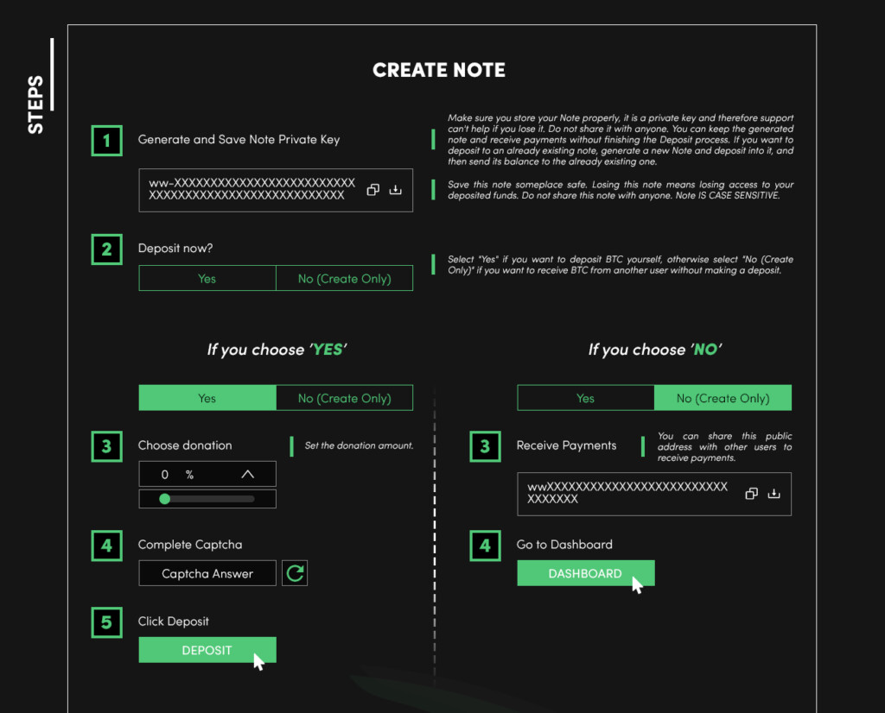

Наконец, здесь вы можете найти ответы на темы, которые не были рассмотрены на других страницах.
Почему правительства не любят миксеры биткойнов?
Правительства негативно относятся к биткоин-миксерам, потому что их используют для сокрытия средств, полученных преступным путем. Речь не идет о какой-то теории заговора о попытке уничтожить Биткоин как таковой, хотя отдельные чиновники действительно враждебно настроены к инструментам приватности.
Однако остается немало политиков «старой школы», которые плохо понимают, как работает криптоиндустрия. Они часто опираются на советы лоббистов с сомнительными интересами и склонны делать поспешные выводы. Примеры этого регулярно появляются всякий раз, когда обсуждается очередная волна ограничений против сервисов приватности.
Биткоин-миксеры, как и кошельки с CoinJoin или некоторые биржи, действительно используются преступниками, и вряд ли это изменится в ближайшее время. Но это не означает, что единственным решением должна стать тотальная, повсеместная слежка за всеми пользователями без разбора.
Что обеспечивает наибольшую конфиденциальность: миксеры, биржи или CoinJoin?
Безусловно, самым конфиденциальным способом анонимизации биткоинов является использование CoinJoin, затем идут биржи, и уже после — миксеры. Причина довольно проста: CoinJoin использует встроенные возможности протокола и не требует кастодиального посредника, поэтому доверительная модель у него обычно лучше.
Тем не менее, как я уже писал ранее, все эти методы должны существовать для здорового функционирования Биткоина. Без биткоин-миксеров комплаенс-отделам крупных криптосервисов становится значительно проще предпринимать крайние меры против любых пользователей, которые пытаются защитить свои финансовые метаданные.
Как работает Биткоин-миксер?

Большинство современных Биткоин-миксеров создают отдельную сессию для каждого пользователя. У разных сервисов это называется по-разному, но по сути выглядит примерно так, как на изображении. Для каждой операции формируются собственные параметры вывода, задержки и гарантийное письмо.
В начале работы Биткоин-миксеры обычно имеют большое количество заранее подготовленных выходов транзакций. Часто это тысячи, десятки тысяч или даже сотни тысяч выходов. В идеале каждый такой выход хранится на отдельном адресе, чтобы последующее перераспределение средств выглядело менее предсказуемо.
Это крайне важно: если миксер не располагает достаточно большим набором таких выходов, анализ всей истории транзакций становится значительно проще, и уровень анонимности фактически снижается до уровня одного, пусть и очень запутанного, кошелька.
После создания сессии миксер автоматически генерирует для вас персональный адрес. Затем он ожидает, пока вы внесете любую сумму в Биткоинах, и разбивает ее на равные части. Дополнительно сервис может рандомизировать задержки и разброс сумм, чтобы усложнить кластерный анализ.
Что такое AML-оценки в миксерах?
AML-оценки — это значения от 0 до 100 процентов, которые рассчитываются компаниями, занимающимися блокчейн-анализом, чтобы определить вероятность того, что конкретный UTXO в Биткоине связан с отмыванием средств. Это не судебное решение, а коммерческая эвристика, но именно она часто влияет на поведение бирж.
Как правило, оценки принимают значения 0, 25, 50, 75 или 100. Значения ближе к 0 и 25 обычно присваиваются UTXO, полученным из майнинга, выводов с бирж, платежных процессоров или внутренних переводов между кошельками.
Оценки ближе к 75 и 100 присваиваются адресам, связанным с санкциями, мошенничеством, гемблингом и, как нетрудно догадаться, миксерами. Миксеры часто помечаются без разбора, несмотря на то что восстановить предыдущую историю таких монет аналитики нередко уже не способны.
В результате этого средства, полученные с бирж, высоко ценятся миксерами, поскольку они обеспечивают низкий или нулевой AML-рейтинг для смешанных средств. Некоторые сервисы даже готовы платить премию за такие монеты, если они улучшают качество выходного пула.
Вывод монет из миксера
Биткоин-миксер обычно тратит достаточно много времени на процесс миксинга. Это связано с тем, что он старается распределить транзакции по разным блокам с различными интервалами, чтобы временные метки не выглядели слишком очевидно.
- Автоматически отправляют вывод частями с паузами между транзакциями.
- Ожидают, пока пользователь вручную инициирует полный вывод.
- Предоставляют набор приватных ключей, которые нужно импортировать в кошелек.
Дополнительно большинство миксеров позволяет распределять вывод на несколько адресов для повышения конфиденциальности.
Самый важный элемент всей схемы — это гарантийное письмо. Это файл с PGP-подписью, который подтверждает, что вы начали процесс миксинга. Вы скачиваете это письмо при создании каждой сессии, и оно позволяет вам получить средства обратно, если сервис попытается изменить условия вывода или возникнет спор.
Почему это называется Биткоин-миксером?
Это называется Биткоин-миксером, потому что по своей сути он похож на кухонный миксер. Также используются названия bitcoin tumbler и bitcoin blender. Я не придумывал эти термины — они уже существовали, когда я пришел в эту сферу.
Я не знаю, кто первым ввел этот термин. Но если у кого-то есть информация об этом, я с радостью добавлю ее в этот раздел.
Законны ли биткойн-миксеры?
Полного запрета на миксеры не существует, однако большинство правительств рассматривают кастодиальные сервисы как операторов перевода средств, которые обязаны регистрироваться, собирать KYC и избегать взаимодействия с санкционными потоками. Поэтому юридический статус зависит от юрисдикции и от того, как именно устроен сервис.
Но ведь большинство миксеров используются для преступлений!
Это верно, но здесь важно кое-что понимать. Действительно, значительная часть биткоинов, проходящих через миксеры, связана с взломами и мошенничеством. Однако обычные пользователи также используют миксинг, чтобы сохранить приватность зарплат, сбережений, корпоративных переводов и активистской деятельности.
Делают ли Биткоин-миксеры меня анонимным?
Нет, большинство миксеров не настраивают свои серверы должным образом для обеспечения полной анонимности. Например, сервисы, использующие Cloudflare, фактически логируют данные пользователей, даже если сами этого не планировали.
Кроме того, сам Биткоин по своей природе не является анонимным. Это означает, что при достаточном уровне анализа транзакции в Биткоине в итоге могут быть связаны с конкретным пользователем, даже если для этого потребуется больше усилий.
Могут ли правоохранительные органы отследить Биткоин-миксеры?
Да. По причинам, описанным выше, анонимность многих Биткоин-миксеров может быть значительно ослаблена при тщательном блокчейн-анализе и через оффчейн-данные, такие как изъятые серверы, биржевые записи и пользовательские ошибки.
Как мне выбрать надежный биткойн-миксер?
В первую очередь важно убедиться, что у сервиса нет мотива вас обмануть. Если вы планируете смешивать крупную сумму, лучше разделить ее на части и обрабатывать каждую отдельно.
Далее проверьте URL миксера и пропустите его через ScamWhammer, чтобы исключить вероятность фишингового клона. Затем обратите внимание на срок работы сервиса. Рекомендуется использовать миксеры, существующие не менее 12 месяцев.
Если выполнять такие проверки каждый раз слишком утомительно, можно пользоваться списками с BitMixList — я самостоятельно проверяю основные риски и красные флаги.
Зачем был создан этот список Биткоин-миксеров?
Он нужен для того, чтобы люди могли безопасно использовать миксинг. Поскольку на Bitcointalk запрещено размещать ссылки на миксеры, возникла необходимость в отдельной площадке для их сбора. BitMixList помогает находить более надёжные сервисы и одновременно отслеживать связанные риски.